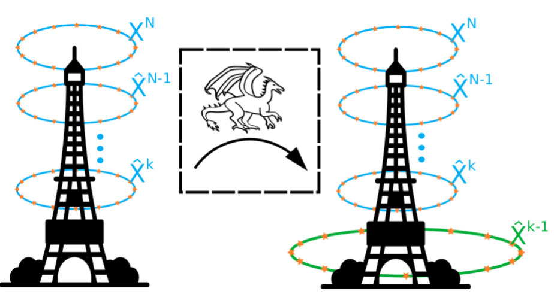
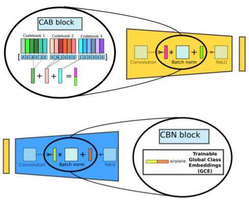
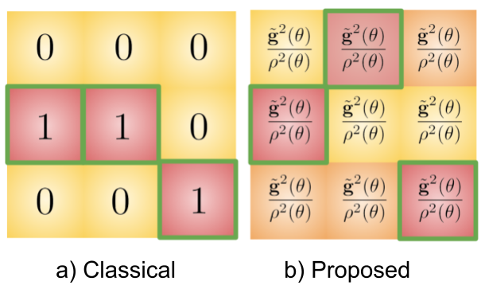
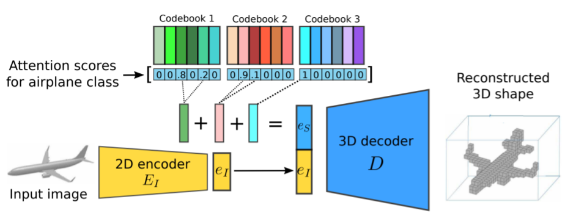
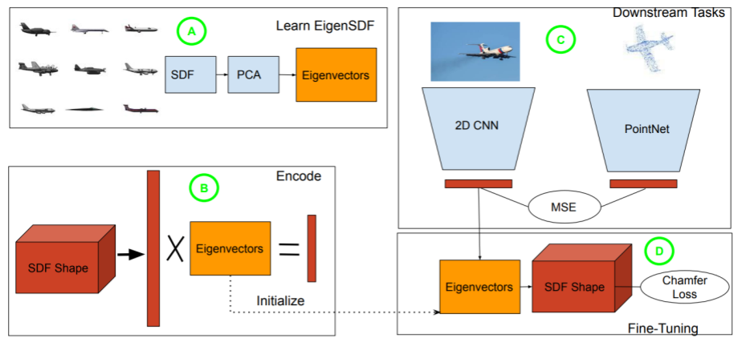
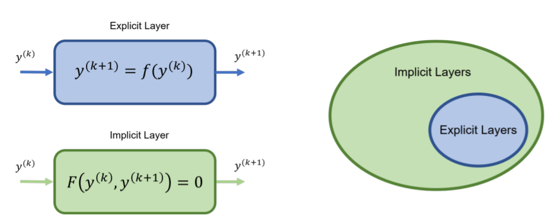
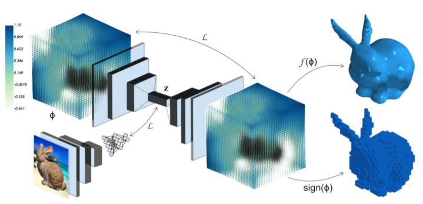

|
Research
My research interests broadly lie in deep learning and computer vision. Currently, I focus on 3D reconstruction, and domain adaptation/generalization, particularly in the context of models based on implicit neural representations.
Additionally, I am becoming increasingly interested in vision and language models.
|
|

|
DRAGON: Drone and Ground Gaussian Splatting for 3D Building Reconstruction
Ham Y, Michalkiewicz M, Balakrishnan G
International Conference on Computational Photography (ICCP), 2024
We propose a novel view synthesis method for multi-elevation 3D building reconstruction with unknown camera poses
|
|

|
Learning Compositional Shape Priors for Few-Shot 3D Reconstruction
Michalkiewicz M, Tsogkas S, Parisot S, Baktashmotlagh M, Eriksson A, Belilovsky
Under Submission, 2024
We introduce ShapeNetMini, a small subset of ShapeNet aimed at accelerating model training without sacrificing performance. Additionally, we enhance the performance of existing few-shot 3D reconstruction methods.
|
|

|
Domain Generalization Guided by Gradient Signal to Noise Ratio of Parameters
Michalkiewicz M, Faraki M, Yu X, Chandraker M, Baktashmotlagh M
International Conference on Computer Vision (ICCV), 2023
We propose a dropout method leveraging the gradient-signal-to-noise ratio (GSNR) of network's parameters to address overfitting, achieving competitive results on standard domain generalization benchmarks
|
|

|
Few-Shot Single-View 3-D Object Reconstruction with Compositional Priors
Michalkiewicz M, Parisot S, Tsogkas S, Baktashmotlagh M, Eriksson A, Belilovsky
European Conference on Computer Vision (ECCV), 2020
We introduce three methods to learn class-specific global shape priors directly from data, tailored for few-shot 3D reconstruction from single images.
|
|

|
A Simple and Scalable Shape Representation for 3D Reconstruction
Michalkiewicz M, Belilovsky E, Baktashmotlagh M, Eriksson A
British Machine Vision Conference (BMBV), 2020
Our work demonstrates that high-quality 3D reconstruction can be achieved using a linear decoder derived from principal component analysis on the signed distance function (SDF) of the surface, allowing for easy scalability to larger resolutions
|
|

|
Implicitly Defined Layers in Neural Network
Zhang Q, Gu Y, Michalkiewicz M, Baktashmotlagh M, Eriksson A
Preprint, 2020
We demonstrate that defining individual layers in a neural network implicitly provides much richer representations over the standard explicit one, consequently enabling a vastly broader class of end-to-end trainable architectures.
|
|

|
Implicit surface representations as layers in neural networks
Michalkiewicz M, Pontes JK, Jack D, Baktashmotlagh M, Eriksson A
International Conference on Computer Vision (ICCV), 2019
We propose representing 3D shapes implicitly as oriented level sets using a continuous and discretized embedding function within a deep learning framework.
|
|
|
Combining the boundary shift integral and tensor-based morphometry for brain atrophy estimation.
Michalkiewicz M, Pai A, Leung KK, Sommer S, Darkner S, Sorensen L, Sporring
J, Nielsen M
Medical Imaging (Oral), 2016
We propose a method for measuring brain atrophy, significantly reducing sample size estimates compared to state-of-the-art techniques
|
|
{kind=link}